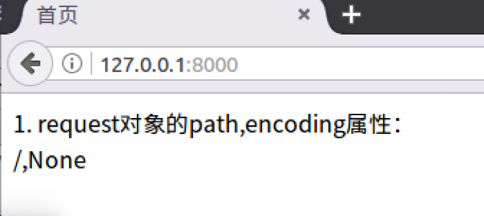
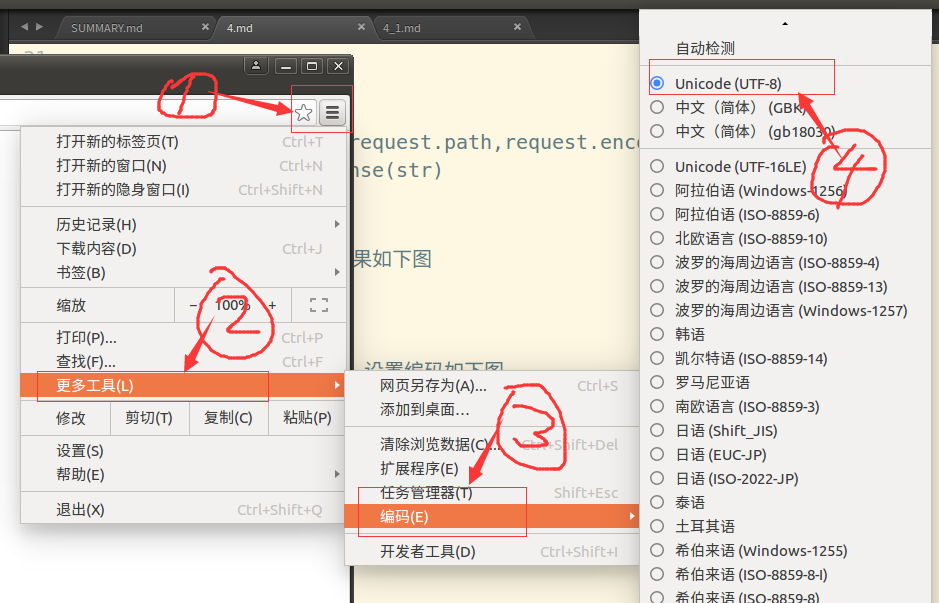
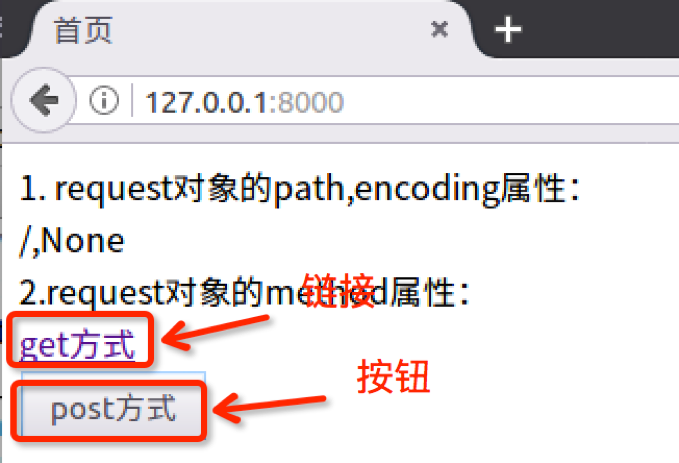
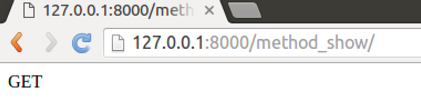
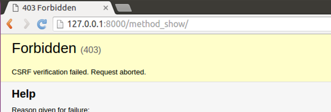
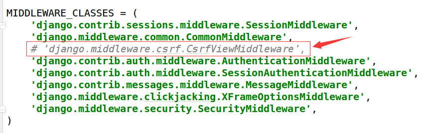
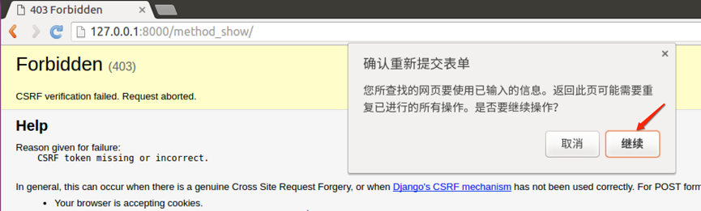
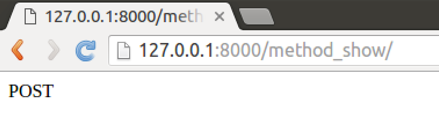

HttpReqeust对象
服务器接收到http协议的请求后，会根据报文创建HttpRequest对象，这个对象不需要我们创建，直接使用服务器构造好的对象就可以。视图的第一个参数必须是HttpRequest对象，在django.http模块中定义了HttpRequest对象的API。
属性
下面除非特别说明，属性都是只读的。
- path：一个字符串，表示请求的页面的完整路径，不包含域名和参数部分。
- method：一个字符串，表示请求使用的HTTP方法，常用值包括：'GET'、'POST'。
- 在浏览器中给出地址发出请求采用get方式，如超链接。
- 在浏览器中点击表单的提交按钮发起请求，如果表单的method设置为post则为post请求。
- encoding：一个字符串，表示提交的数据的编码方式。
- 如果为None则表示使用浏览器的默认设置，一般为utf-8。
- 这个属性是可写的，可以通过修改它来修改访问表单数据使用的编码，接下来对属性的任何访问将使用新的encoding值。
- GET：QueryDict类型对象，类似于字典，包含get请求方式的所有参数。
- POST：QueryDict类型对象，类似于字典，包含post请求方式的所有参数。
- FILES：一个类似于字典的对象，包含所有的上传文件。
- COOKIES：一个标准的Python字典，包含所有的cookie，键和值都为字符串。
- session：一个既可读又可写的类似于字典的对象，表示当前的会话，只有当Django 启用会话的支持时才可用，详细内容见"状态保持"。
- 运行服务器，在浏览器中浏览首页，可以在浏览器“开发者工具”中看到请求信息如下图：

示例
接下来演示属性path、method、encoding，对于GET、POST、FILES、COOKIES、session后面会有详细讲解。
path、encoding
1）打开booktest/views.py文件，代码如下：
def index(request):
str='%s,%s'%(request.path,request.encoding)
return render(request, 'booktest/index.html', {'str':str})
2）在templates/booktest/下创建index.html文件，代码如下：
<html>
<head>
<title>首页</title>
</head>
<body>
1. request对象的path,encoding属性：<br/>
{{ str }}
<br/>
</body>
</html>
2）打开浏览器请求，运行效果如下图：

3）以chrome浏览器为例，设置编码如下图，默认为utf-8编码。

method
1）打开booktest/views.py文件，编写视图method_show，代码如下：
def method_show(request):
return HttpResponse(request.method)
2）打开booktest/urls.py文件，新增配置如下：
url(r'^method_show/$', views.method_show),
3）修改templates/booktest/下创建index.html文件，添加代码如下：
<html>
<head>
<title>首页</title>
</head>
<body>
...
...
2.request对象的method属性：<br/>
<a href='/method_show/'>get方式</a><br/>
<form method="post" action="/method_show/">
<input type="submit" value="post方式">
</form>
<br/>
</body>
</html>
4）打开浏览器，输入如下网址：
http://127.0.0.1:8000/
5）浏览效果如下图：

6）点击链接，转到method_show，浏览效果如下图:

7) 回到method_test页面，点击按钮，转到method_post，浏览效果如下图，报错了。

8）打开test3/settings.py文件，将MIDDLEWARE_CLASSES项的csrf注释。

9）回到浏览器中刷新，浏览效果如下图，点击“继续”按钮。

10）最终浏览效果如下图：
